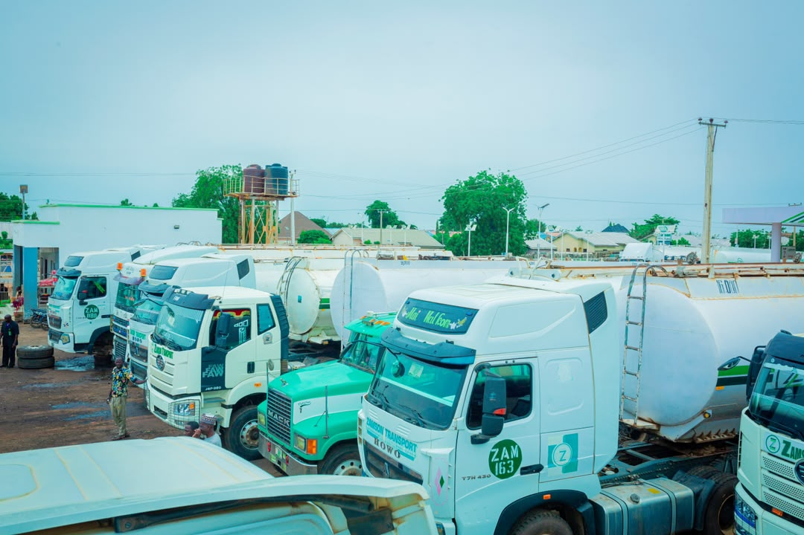
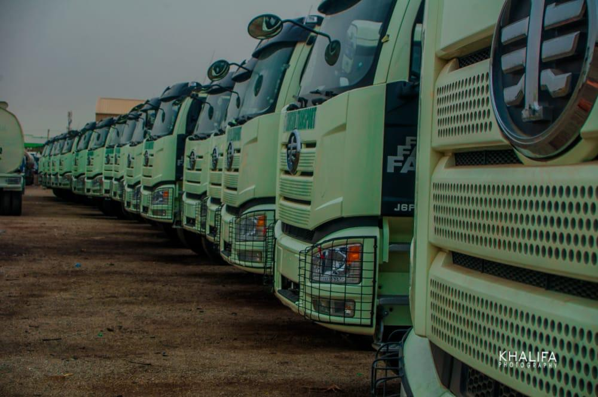

01
TRANSPORT · HAULAGE · DISTRIBUTION
Zamson Transport Limited
Moving products safely, efficiently and reliably.
Zamson Transport Limited is a privately owned Nigerian transportation and logistics company providing haulage services through its fleet of trucks and tanker vehicles. We focus on safety, dependable service and efficient movement of goods.
Contact the Group →ZAMSON TRANSPORT
Our Fleet in Action
Take a closer look at our trucks, tanker fleet and transportation operations.
02
Transport Operations
COMPANY PROFILE
About Zamson Transport Limited
Zamson Transport Limited is an indigenous transportation and logistics company with its main office in Abuja, FCT. The company provides transportation and logistics services guided by professionalism, reliability, safety and customer satisfaction.
The company maintains a fleet of transportation vehicles, including trucks, tankers and other logistics vehicles, supporting the movement of goods and petroleum products. Its experienced personnel bring together practical knowledge and operational experience to meet customers' transport requirements.
Through staff training, vehicle maintenance, effective supervision and teamwork, Zamson Transport is committed to dependable operations and continuous improvement.
OUR PRIORITY
Safety and reliability
OUR CAPABILITY
Truck and tanker fleet
OUR COMMITMENT
Efficient logistics services
WHAT WE DO
Our Business Activities
Our approach combines transport expertise, operational coordination and attention to vehicle safety and customer needs.
Road Transportation
Truck-based transportation supporting the movement of goods and products to their destinations.
Tanker Operations
Transportation of petroleum products using tanker vehicles, subject to applicable safety and operating requirements.
Logistics Support
Practical coordination to support efficient and reliable movement of goods for customers.
Fleet Management
Attention to vehicle maintenance, staff training and safe operating practices.
Quality Assurance
Effective supervision, well-maintained vehicles and a commitment to service quality and improvement.
Customer Service
Professional communication and a focus on understanding customer requirements and delivering dependable service.
OUR MISSION
Safe and efficient transportation
To provide customers with efficient, fast and safe logistics and transportation services through responsible and professional operations.
OUR VISION
Service customers can rely on
To deliver excellent service that builds customer confidence, encourages lasting relationships and supports continuous improvement.
OUR VALUES
What Guides Our Work
The principles that shape our approach to customers, employees and transportation operations.
Safety
Integrity
Customer Service
Professionalism
Efficiency
Teamwork
Innovation
Sustainable Growth
COMPANY GALLERY
A Look at Our Fleet
Photographs of trucks and transportation vehicles representing Zamson Transport's operating capabilities.



SHARED GROUP CONTACTS
Connect with Zamson Transport
Contact Zamson Group for transportation enquiries, business partnerships and official office locations.
0808 888 8837 | 0805 177 7777